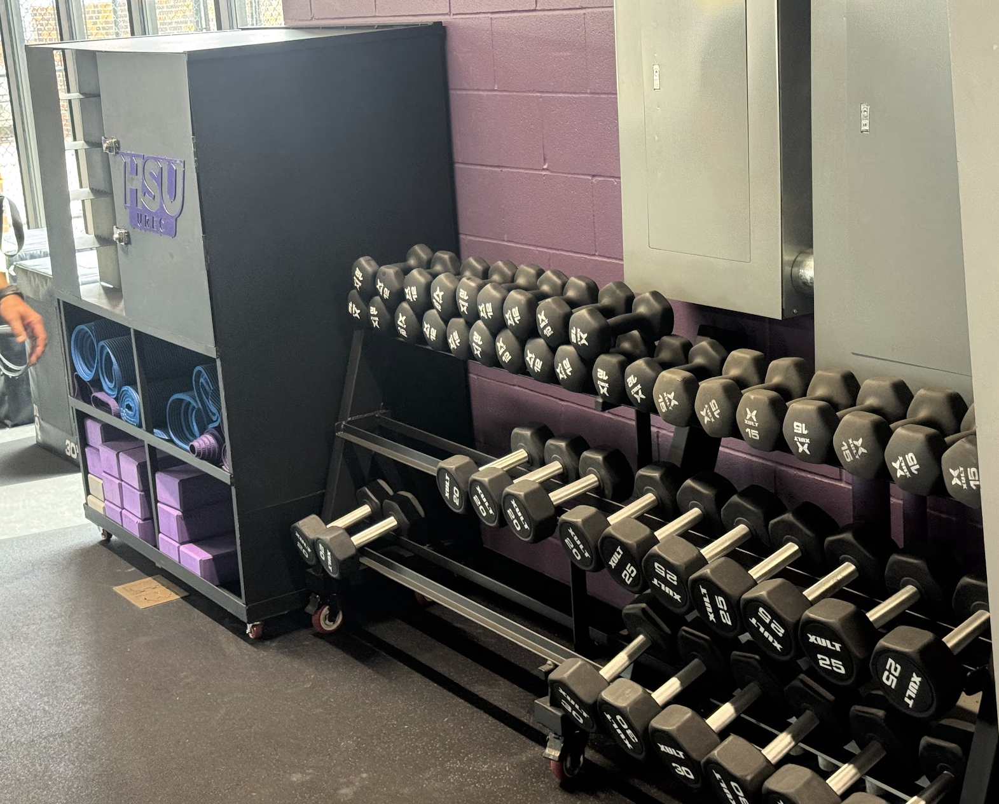

01 / SENIOR CAPSTONE
01 / SENIOR CAPSTONEA senior capstone project to design and build an outdoor lift for HSU’s hippotherapy program, helping staff transfer riders between a mounting ramp and a horse.
View projectMECHANICAL ENGINEER · NORTHWESTERN ROBOTICS STUDENT
I’m Jeremiah Richard. I studied mechanical engineering at Hardin-Simmons and am now studying robotics at Northwestern. Here’s some of the work I’ve done.
01 / SENIOR CAPSTONEA senior capstone project to design and build an outdoor lift for HSU’s hippotherapy program, helping staff transfer riders between a mounting ramp and a horse.
View project
02 / DESIGN & FABRICATIONA custom dumbbell rack and mobile storage cabinet built for HSU’s recreation center, with space for class equipment and personal belongings.
View projectUPCOMING PROJECT
I’ll be working with a Franka Panda arm in my Embedded Systems in Robotics course at Northwestern. The project will involve ROS 2, sensors, and object manipulation.
We haven’t been assigned the project yet. I’ll add the details here once we get started.
Static structural analysis of a simplified frame in ANSYS.
Coursework in gear forces, bending, torsion, static stress, and fatigue.
ABOUT
I’m a mechanical engineering graduate from Hardin-Simmons University and a current M.S. Robotics student at Northwestern. I’m interested in mechanical design, manufacturing, automation, and robotics.
More about me →View resume →CONTACT
You can reach me by email or on LinkedIn.
jeremiah.richard18@gmail.comLinkedIn ↗